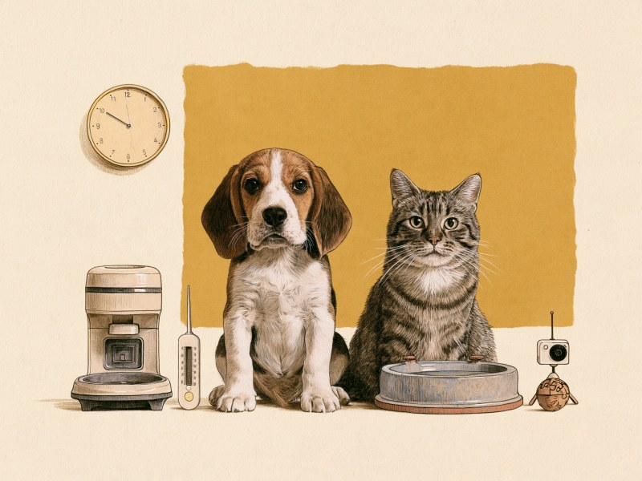

PRこの記事にはアフィリエイト広告(Amazonアソシエイト)のリンクが含まれます。Amazonのアソシエイトとして、Tiny Wondersは適格販売により収入を得ています。

仕事や旅行で犬や猫を家に残すとき、何時間までなら大丈夫なのか。海外の動物福祉団体などの目安を出典つきで整理し、出典が割れる部分と、道具で補えること・補えないことをまとめました。 How long can a dog or cat stay home alone? We lay out the guidelines from overseas animal welfare organizations with sources, where those sources disagree, and what tools can and cannot cover.
犬は4時間が英国の福祉団体の目安、猫は12時間が「時々まで」の上限の目安で、出典によっては24〜48時間まで幅があります。道具は不在を延ばすものではなく、人が来るまでの水・食事・室温のリスクを減らし、様子を知るためのものです。
この記事は獣医師の監修を受けていません。個人が、英国や米国の動物福祉団体・獣医系の団体、動物用医薬品メーカーやペット情報サイトの記事、日本の自治体や公的機関の公開資料を読んで整理したものです。環境省や自治体の資料には、犬猫の留守番の時間数を示したものは、今回確認できていません(2026年10月時点)。ここで紹介する時間の目安は、海外の動物福祉団体などのものです。子犬・子猫・高齢・持病のある子の留守番は、かかりつけの獣医師に相談してください。うさぎ・ハムスター・小鳥は、それぞれの「飼い方の基本」ガイドをご覧ください。
この記事で触れる5つの道具:
- 自動給餌器 — 決まった時間に一定量のドライフードを出します。止まることがあり、猫のシッターの代わりにはなりません。
- 循環式給水器 — 複数の水場の一つになります。毎日の洗浄とフィルター交換が前提です。
- 温湿度計 — 留守中の室温と湿度を知るための道具です。置き場所と、かじられない位置を確かめます。
- ペットカメラ — 出先から様子を見る目になります。パスワード認証などの設定が前提です。
- 知育おもちゃ — 退屈な時間を減らす助けになることがあります。壊せない・飲み込めない大きさかを確かめてから選びます。
| 不在の長さ | 出典の目安 | 準備したいこと |
|---|---|---|
| 〜4時間 | 犬は日常的な上限の目安(RSPCA・Dogs Trust・PDSA)。猫は日中・一晩なら多くが問題なし(Cats Protection) | 水を複数箇所に。室温の確認。留守番中のおもちゃは壊せない・飲み込めないものだけ |
| 4〜12時間 | 犬は目安を超える。猫は8〜12時間が目安(PetMD)、12時間は時々まで(Cats Protection) | 犬は立ち寄りや日中預かりの手配(Dogs Trust)。猫は水・トイレの追加、必要なら給餌器・給水器・カメラ |
| 12〜24時間 | 猫は12時間超でシッターかキャテリー(Cats Protection)。24時間超ならシッター(PetMD) | 確認に来る人の手配。給餌器・給水器は補助 |
| 24〜48時間 | ドライと水があれば可能な場合も(Merck、出典中もっとも緩い見方)。Webvetは確認者つきの外限 | 1日2回以上の訪問(Cats Protection)かキャテリー |
| 2泊以上 | 一晩を超えるならシッターか毎日の訪問(Webvet)。連日の不在はシッターかキャテリー(Cats Protection) | シッターかペットホテルの予約。道具では代われない |
犬の留守番:4時間が目安。守れない日はどうするか
英国の動物福祉団体RSPCAは、犬を4時間より長く留守番させないことを助言しています。同じく英国のDogs Trustも4時間を超える不在を避けるよう書いており、獣医慈善団体PDSAは4時間を犬を日常的に留守番させる最長の時間としています。3つの団体が同じ数字を挙げています。
この4時間は、運動・排泄・人と過ごす機会をつくるための福祉の観点からの助言です。RSPCAは適切な長さは犬によって異なると書き、PDSAも犬はそれぞれ違うとしています。PDSAによれば、非常に活発な幼い子犬には4時間でも長すぎることがあり、年上の犬なら問題ない場合もあり、留守番できる長さは年齢と慣れによります。4時間を超える日があること自体を責める数字ではありませんが、超える場合は短くするか、人の手配を考える、という読み方になります。
4時間を超える日の選択肢も、出典が挙げています。Dogs Trustは、4時間より長く出かける場合は、誰かに立ち寄ってもらうか、犬のデイケア(日中預かり)を手配するよう書いています。PDSAは、近所の人や友人に様子を見てもらう、自宅に来てくれる散歩代行やペットシッターを使う、デイケアを探す、といった方法を挙げ、誰かが定期的に外に出してトイレの機会をつくる必要があるとしています。
様子が気になるときは、Dogs Trustが挙げる方法が参考になります。スマホで動画を撮る、窓の外など見えない位置から観察する、または遠隔カメラを使う方法で、カメラは犬が最も長く過ごす場所に置き、映像で不安のサインを確認します。子犬や高齢犬、持病のある犬の留守番は、かかりつけの獣医師に相談してください。
留守番中に渡すおもちゃは、選ぶ前に確認したい点があります。PDSAは、一匹で残すおもちゃは壊せない・飲み込めないと確信できるものだけにし、丸呑みや窒息のおそれがない大きさを選び、噛みちぎれる部品が出てきたら捨てるよう書いています。Humane World for Animalsも、壊れ始めたおもちゃは捨てる、音が鳴る部品付きは見守るときだけにする、「安全」とされる詰め物でも消化されない、フードトイにピーナッツバターを使うなら(獣医師が与えてよいとした場合に)キシリトールで甘味づけされていないものを選ぶ、と注意しています。
出典を見る
参考にした情報: RSPCA rspca.org.uk / Dogs Trust(留守番) dogstrust.org.uk / PDSA(留守番) pdsa.org.uk / Dogs Trust(分離不安) dogstrust.org.uk / PDSA(おもちゃ) pdsa.org.uk / Humane World for Animals humaneworld.org
猫の留守番:12時間・24時間・48時間をどう読むか
猫の時間の目安は、出典によって幅があります。英国の猫の福祉団体Cats Protectionは、ほとんどの猫は日中や一晩なら問題ないとしつつ、一匹にする最大の時間は約12時間で、12時間は時々にとどめ定期的にはしないと書いています。獣医師の署名記事を載せるPetMDは、健康な成猫で一度に8〜12時間程度としています。
一方、動物用医薬品メーカーMerck Animal Healthの飼い主向け記事(著者・監修者の記載はありません)は、ドライフードを自由に食べられ新鮮な水が飲めるなら、成猫は24〜48時間一匹にできる場合があるとし、それを超えると水が汚れて飲めなくなったりトイレが満杯になったりするおそれがあると書いています。獣医師がレビューするペット情報サイトWebvetは、健康な成猫でも一晩が妥当な最長で、24〜48時間は確認に来る人が決まっている場合のみの外限としています。12時間は「時々まで」の上限の目安、24〜48時間は条件つきの外限と読むと、出典の差が整理できます。
子猫は短く見ます。PetMDは乳離れ前で2〜3時間まで、離乳した健康な子猫で4時間以内、Merckは生後4か月未満で4時間以内、6か月で8時間程度としています。Cats Protectionも子猫は一度に数時間までとしています。子猫・高齢猫・持病のある猫はより頻繁な確認が必要とされるので、かかりつけの獣医師に相談してください。
自動給餌器を選ぶ前に確認したいのは、何を出せるかと、止まったときどうなるかです。Webvetによれば、一般的なホッパー式はドライ専用で、ウェットは室温で数時間で傷みます。ウェット対応をうたう製品もありますが、Webvetはそれらも当日分向きで、数日分の備えではないとしています。詰まり・電池切れ・Wi-Fi切れ・モーター停止も起こります。環境省のガイドライン(2009年発行)は、缶詰・レトルト・手作りのフードは傷みがドライより早いため出しっぱなしを避け、給与時間は20分程度が目安で、猫はドライを置き餌にしてもよいが常に清潔で新鮮に保つとしています。Webvetは、頼る前に数日家で動作を確認すること、給餌器1台だけを唯一の食事源にしないこと、「出た」という通知は食べた証拠にならないことも挙げています。
循環式給水器を選ぶ前には、洗いやすさを確認します。International Cat Careは、水は毎日新鮮なものを出し、容器は可能なら毎日、石けんか食器用洗剤とお湯で洗って十分にすすぐよう勧め、給水器は定期的に分解してしっかり洗い、フィルターはメーカーの指示どおりに交換するとしています。猫は一般にガラスや陶器の広くて浅い器を好む傾向があり、給水器は徐々に慣らします。Merckは留守番前に水入れを増やし、トイレも1つ足すよう書いているので、給水器は複数の水場の1つと考えてください。
出典を見る
参考にした情報: Cats Protection(ブログ) cats.org.uk / PetMD(獣医師署名の記事) petmd.com / Merck Animal Health(動物用医薬品メーカーの飼い主向け記事) merck-animal-health-usa.com / Webvet(獣医師がレビューするペット情報サイト) webvet.com / 環境省 飼い主のためのペットフード・ガイドライン env.go.jp / International Cat Care icatcare.org
出かける前の確認:こんろ・コード、冷却マットの注意
NITE(製品評価技術基盤機構)は2024年3月、2013〜2022年度の10年間に通知された製品事故のうち、ペットによる事故は61件で、約9割にあたる54件が火災に至ったと公表しました。この件数には、非重大事故やペットの関与が疑われる事故も含まれます。飼い主の外出中に留守番していた犬や猫が、こんろの操作ボタンやスイッチを押した事故が多く、電気製品への排尿や電源コードのかみつきによる事故も起きています。
NITEの防止のポイントは、外出時はガスの元栓を閉めIHこんろ・電気こんろは主電源を切る(ロック機能があれば使う)、目を離すときや外出時はペットをケージに入れる、こんろや暖房器具の周りに燃えやすい物やペットの興味を引く物を置かない、電気製品を使わないときはプラグを抜きペットの届かない場所に保管する、排尿しやすい場所の近くに電気製品を置かない、の5点です。出かける前の短い確認が、道具より先にできる備えです。
暑さ対策の冷却マットにも注意があります。米国のASPCAは2026年10月、冷却ペットマットやホット・コールドパックなどの一部の製品から高濃度のアクリルアミドが見つかったと警告しました。報告された嘔吐・筋肉の震え・ふらつきなどの症状は、アクリルアミドが原因と疑われている段階で、対象の製品名や件数は示されていません。日本で流通する製品に当てはまるかは、確認できていません。ASPCAの助言は、製品はしっかり保管し、冷却マットのそばでペットだけにしないことです。かじった・破れた・飲み込んだ疑いがあるときは、かかりつけの動物病院(夜間は救急病院)にすぐ連絡し、ふらつきや震えなどの神経症状があれば直ちに受診するよう書かれています。
見守れない留守番中は冷却マットを敷かないほうが、ASPCAの助言には沿います。その場合の暑さ対策は、東京都が示すエアコンでの温度・湿度の管理が基本です。グッズ別の注意は暑さ対策グッズの選び方と冬の寒さ対策グッズの選び方にまとめています。
出典を見る
参考にした情報: NITE ペットによる製品事故 nite.go.jp / ASPCA aspca.org / 東京都保健医療局 ペットの熱中症 hokeniryo.metro.tokyo.lg.jp
室温の見張り番:温湿度計とペットカメラの選び方
東京都保健医療局は、ペットを留守番させる場合も天気予報などで天候を予測し、エアコンなどを利用して温度や湿度を適切に管理するよう呼びかけています。屋内飼育では、いつでもきれいで十分な水が飲めるようにすることも挙げています。福島県動物愛護センターは、気温が25℃を超えると人と同様に犬や猫も熱中症の危険性が高まり、気温が高くなくても湿度が高ければ熱中症になることもある、水が飲める場所は複数あるとよい、自動車の中での留守番はやめる、としています。
温湿度計を選ぶ前に確認したいのは、どこの温度を測るかと、どこに置くかです。東京都は、犬や猫は人と比べて体の位置が地面に近く、地面からの熱の影響を受けやすいとしています。エアコンの設定温度と、犬や猫が実際に過ごす場所の温度は同じとは限らないので、動物のいる高さに近く、かじれない・倒されない・電池やコードに触れられない位置に置いて数値を確認しましょう。季節ごとの備えは暑さ対策ガイドと冬の寒さ対策ガイドにまとめています。
ペットカメラを選ぶ前には、置き場所と設定を確認します。Dogs Trustは、カメラは犬が最も長く過ごす場所に置くよう書いています。人用の見守りカメラとして売られている製品を使う人もいますが、総務省の注意喚起はペット用・人用を問わずネットワークカメラに当てはまります。総務省は、管理が甘いネットワークカメラを放置すると映像の漏えいや、特定の個人が映り込むことによるプライバシー侵害のおそれがあるとして、パスワード認証の設定、十分に長いパスワード、ファームウェアが最新か(サポート終了なら買い替えを検討)、使わない機能が有効になっていないかの確認を求めています。パスワード認証を設定せずに使わないことが、選ぶ前に確認したい点です。同居の人やシッターが映る・声が入る設置にする場合は、事前に伝えておきましょう。
出典を見る
参考にした情報: 東京都保健医療局 ペットの熱中症 hokeniryo.metro.tokyo.lg.jp / 福島県動物愛護センター pref.fukushima.lg.jp / Dogs Trust(分離不安) dogstrust.org.uk / 総務省 ネットワークカメラのセキュリティ設定についての注意喚起 soumu.go.jp
一晩を超えるなら人の手配を:道具で代われない線
ここまで紹介した道具は、人が来るまでの間の水・食事・室温のリスクを減らし、様子を知るための補助です。Webvetは自動給餌器は猫のシッターではないと明記し、健康な成猫でも一晩が妥当な最長、24〜48時間は確認に来る人が決まっている場合のみの外限としています。「道具があるから数日任せてよい」とする出典は、今回の範囲では見当たりませんでした。
人を手配する閾値は、出典によって幅があります。Cats Protectionは12時間を超える場合や連日の不在、PetMDは24時間を超える不在、Webvetは一晩を超える不在でシッターか毎日の訪問を勧めています。Merckも、一晩か二晩を超えるならシッターが心配を減らすという書き方で、条件つきで24〜48時間を認める一方、それを超える場合は人の手配を勧めています。つまり、出典の幅は「12時間超」から「1〜2泊超」までです。
Cats Protectionは、休暇のときは猫が餌をもらい安全に過ごせるよう少なくとも1日2回訪問できる人を手配し、非常に幼い・高齢・特定の持病のある猫はより頻繁な訪問が必要としています。どこで預けるかについては、猫を家に置くのが最も安全でストレスの少ない選択肢で、人慣れした猫ならキャテリーも良い代替になりうるが慎重に選ぶとしています。Merckも、環境の変化が猫のストレスになるため、シッターは自宅に来てもらうのが望ましいと書いています。
犬については、4時間という目安が各団体で共通しているため、一晩の不在はその目安を大きく超えます。犬の宿泊時の時間を書いた出典は今回の範囲にはありませんが、人の手配で考える方向は、Dogs TrustやPDSAの書き方と同じです。シッターやホテルを使うときも、温湿度計や見守りカメラは留守中の様子を伝える補助になります。
出典を見る
参考にした情報: Webvet(獣医師がレビューするペット情報サイト) webvet.com / Cats Protection(ブログ) cats.org.uk / Cats Protection(休暇) cats.org.uk / PetMD(獣医師署名の記事) petmd.com / Merck Animal Health(動物用医薬品メーカーの飼い主向け記事) merck-animal-health-usa.com
ミニクイズ:猫は12時間までなら、毎日の留守番にしてよい?(タップして答えを見る)
こたえ×。Cats Protectionは、一匹にする最大の時間は約12時間で、12時間は時々にとどめ定期的にはしないと書いています。毎日の留守番の長さの目安として使う数字ではありません。
犬は4時間、猫は12時間(時々まで)が海外の福祉団体の目安で、出典によって人を手配する閾値には幅があります。道具は不在を延ばすものではなく、人が来るまでの水・食事・室温のリスクを減らし、様子を知るためのものです。帰宅後は食事や水の減り方、様子の変化を確認し、気になるサインがあれば犬猫の体調不良のサインも参考に、かかりつけの獣医師に相談を。